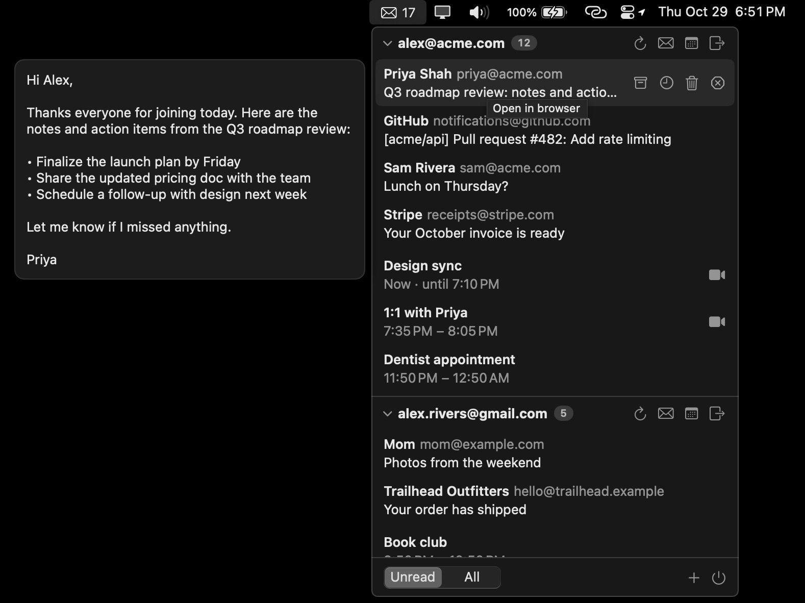

Mail Menu
A macOS menu bar app to track unread email and upcoming calendar events, across all your Google accounts.
View source on GitHub
Features
- Unread count in the menu bar, across multiple Google accounts.
- Unread or all inbox mail, with collapsible accounts.
- Text preview of an email on hover; click to open it in the browser.
- Archive, unsubscribe, or block and report spam in one click.
- Upcoming calendar events for the next 24 hours, with one-click join for Meet, Zoom and more.
- Opens at login and refreshes every 2 minutes.
- Private: no servers, and your data never leaves your Mac except to talk to Google.
Install
There's no prebuilt download yet. You build Mail Menu with macOS 14+, Xcode 16+ and your own Google OAuth client ID. The README walks through creating one.
git clone https://github.com/aakashns/aak.sh.git
cd aak.sh/mailmenu
cp app/Config/Local.xcconfig.example app/Config/Local.xcconfig
# set GOOGLE_CLIENT_ID in app/Config/Local.xcconfig
scripts/install.shThis builds a release copy, installs it to /Applications and launches it. Re-run it to update.